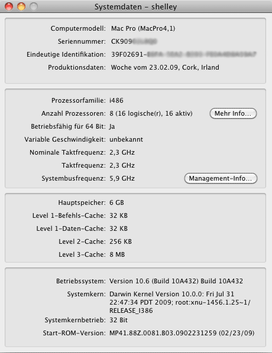
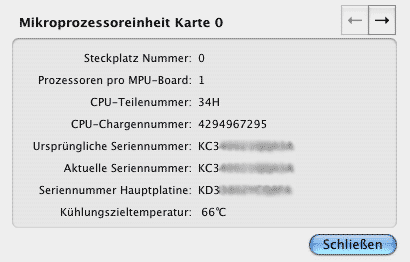
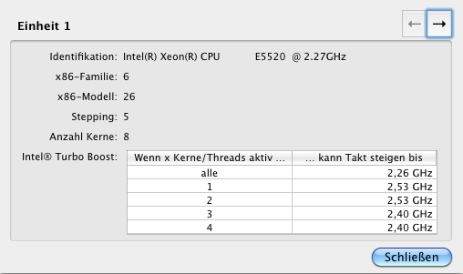
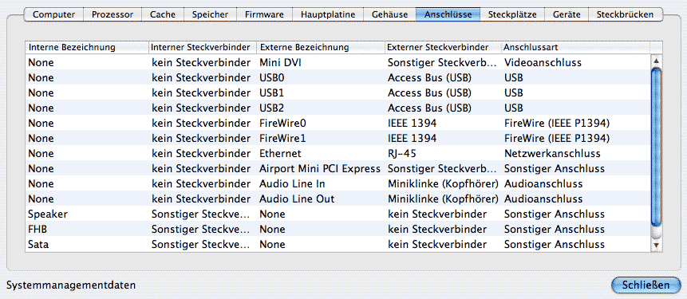
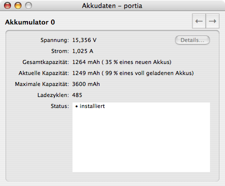
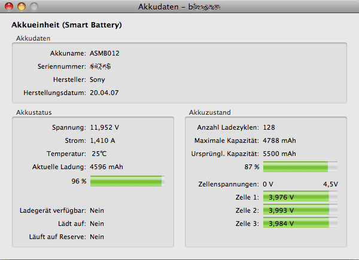
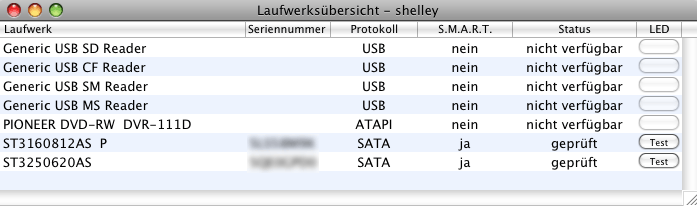
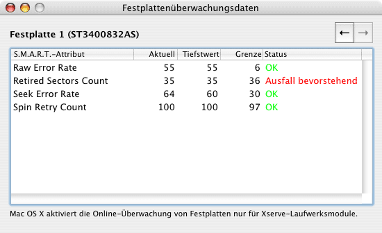
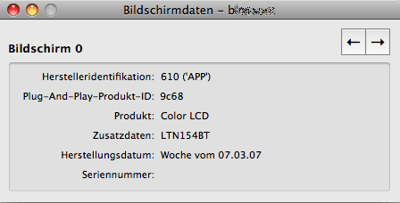

Systemdaten anzeigen |
Sie können mit dem Monitorprogramm detaillierte technische Informationen über Ihren Computer anzeigen lassen. Rufen Sie hierzu den Menüpunkt Fenster > Systemdaten einblenden auf oder drücken Sie ⌘+4. Zu den angezeigten Daten gehört:
Ist Ihr Computer mit selbständigen Mikroprozessoreinheiten (MPUs) ausgestattet - dies ist bei den Spitzenmodellen der Power Mac G5-Baureihe der Fall - oder verwenden Sie ein Intel-basiertes Macintosh-System, können Sie ein herausgleitendes Detailfenster öffnen, das weitere Daten anzeigt. Um das zusätzliche Infofenster zu öffnen, betätigen Sie die Schaltfläche Mehr Info…. Falls Ihr Computer eine eingebaute Systemmanagementdatenbank besitzt, die mit den Industriestandards kompatibel ist, öffnet die Betätigung des Knopfes Management-Info… ein weiteres Detailfenster mit anderen Angaben (siehe unten).

Das Detailfenster bei Systemen mit MPU-Karten beinhaltet die folgenden Informationen:

Bei Computern mit mehreren MPU-Karten kann jede einzelne Karte über die Navigationstasten rechts oben im Fenster ausgewählt werden.
Falls Ihr Computer einen Prozessor der x86-Architektur besitzt (Intel-basierte Macintosh-Systeme) gibt Ihnen die Schaltfläche Mehr Info die folgenden Daten aus:

Bei Computern mit mehreren Prozessoreinheiten kann jede einzelne Einheit über die Navigationstasten rechts oben im Fenster ausgewählt werden.
Das Detailfenster über Computer, die eine Systemmanagementtabelle enthalten, stellt die folgenden Daten zur Verfügung:

Bei Verwendung einer Vollversion von Hardwaremonitor sind auch Detailinformationen zu den eingesetzten Akkus abrufbar. Wählen Sie hierzu den Menüpunkt Fenster > Akkudaten einblenden oder drücken Sie ⌘+5. Hardwaremonitor verwendet unterschiedliche Anzeigefenster, je nach dem, ob Sie moderne Akkutypen verwenden oder nicht. In jedem Fall sind mindestens die folgenden Daten verfügbar:
Die nachfolgenden beiden Punkte sind nur für gewisse Akkupakete verfügbar und lassen sich nur mit bestimmten Betriebssystemversionen anzeigen:
Bei Computern mit mehreren Akku-Steckplätzen sind die Daten für jeden Akkumulator einzeln abrufbar. Verwenden Sie hierzu die Navigationstasten rechts oben im Fenster. Falls Ihre Akkueinheit kompatibel mit dem Industriestandard für "Smart Batteries" ist, können Sie den Knopf Details… betätigen, um zusätzliche Herstellungsdaten wie Anbieter, Seriennummer oder Produktionsdatum anzeigen zu lassen. Das nachfolgende Beispiel zeigt die Daten für den Akkupack eines älteren PowerBooks:

Falls die Akkueinheit konform zum Smart-Battery-Industriestandard ist und Sie ein Intel-basiertes System mit Mac OS X 10.4.9 oder einer späteren Version einsetzen, verwendet Hardwaremonitor die folgende Darstellung für die Akkubetriebsdaten:

Dieses Fenster zeigt zusätzlich die aktuelle Temperatur des Akkus und die Spannungen der einzelnen Zellen an, falls die Einheit diese Daten preisgibt. Der aktuelle Ladezustand wird durch eine Balkengrafik angezeigt, ebenso der Vergleich zwischen der aktuellen Maximalkapazität und der ursprünglichen Kapazität, der charakteristisch für den Gesundheitszustand des Akkus ist. Es ist normal, dass der Akku sich bei Benutzung im Laufe der Zeit abnutzt, so dass die maximale Kapazität im Verhältnis zur Kapazität "ab Werk", als der Akku neu war, kleiner wird.
Der Akkupack funktioniert möglicherweise nicht mehr richtig, wenn eine der Akkuzellen eine Spannung aufweist, die sich von den Spannungen der verbleibenden Zellen stark unterscheidet. Dies ist ein gutes Indiz dafür, dass der Akku seine Lebensdauer erreicht hat und ausgetauscht werden sollte.
Abhängig von Ihrem Computer und der Version von Mac OS X, die auf ihm läuft, überwacht das Betriebssystem möglicherweise die korrekte Funktion aller angeschlossenen Festplatten, um vorherzusagen, ob ein Laufwerk ausfallen könnte. Diese Funktion basiert auf einer Technik, die sich S.M.A.R.T. nennt.
S.M.A.R.T. ist die Abkürzung für Self Monitoring, Analysis, and Reporting Technology (Technik zur Selbstüberwachung, Analyse und Bericht). Es handelt sich um einen Industriestandard, der 1992 eingeführt wurde, um auf den Verschleiß von Festplatten frühzeitiger reagieren zu können. Festplatten, die sich an den S.M.A.R.T.-Standard halten, überwachen sich mit einem eigenen Mikroprozessor selbst und erlauben, dass das Betriebssystem Messwerte anfordert, die anzeigen, ob sich Betriebswerte so verändert haben, dass die Platte in näherer Zukunft ausfallen könnte. In diesem Fall kann die Festplatte ausgetauscht werden, bevor Daten verloren gehen.
S.M.A.R.T. ist für alle aktuellen Festplattenlaufwerke verfügbar, die über einen ATA- oder SATA-Anschluss mit dem Computer verbunden sind. Um den aktuellen Status Ihrer Laufwerke anzuzeigen, wählen Sie den Menüpunkt Fenster > Laufwerksübersicht einblenden oder drücken Sie ⌘+8.

Die Spalten in der Tabelle haben die folgende Bedeutung:
Die Tabelle aktualisiert sich nicht automatisch, da eine kontinuierliche Überwachung alle Laufwerke verlangsamen würde. Falls Sie sicherstellen möchten, dass die Tabelle aktuell ist, schließen Sie das Fenster und öffnen Sie es dann wieder.
Der im letzten Abschnitt erläuterte S.M.A.R.T.-Überprüfungsstatus erlaubt Ihnen einzuschätzen, ob die Plattenlaufwerke in Ordnung sind. Der Status basiert auf Daten, die vom Diagnoseprozessor der Plattensteuereinheit gesammelt wurden. In einigen Fällen können auch diese Detaildaten, auf denen der Überprüfungsstatus beruht, überwacht werden. Mac OS X übernimmt dies automatisch auf Apple Xserve-Computern.
Wählen Sie den Menüpunkt Fenster > Xserve-Plattendaten einblenden oder drücken Sie ⌘+7. Ein Fenster ähnlich wie das Folgende wird erscheinen:

Im Normalfall ist dieses Funktionsmerkmal nur dann verfügbar, wenn alle der folgenden Bedingungen erfüllt sind:
Auf Computern, die mit mehreren überwachten Laufwerken ausgerüstet sind, können die Daten für jede Einheit einzeln abgerufen werden. Verwenden Sie hierzu die Navigationstasten rechts oben im Fenster.
Die Tabelle zeigt die folgenden Informationen an:
Es gibt drei verschiedene Fälle:
Diese Funktion ist nur in Hardwaremonitor, nicht in Temperaturmonitor verfügbar. Das Programm kann versuchen, alle Bildschirme zu identifizieren, die gegenwärtig am System angeschlossen sind. Wählen Sie den Menüpunkt Fenster > Bildschirmdaten einblenden aus oder drücken Sie ⌘+9. Die folgenden Daten über jede Anzeigeeinheit sollten zugreifbar werden:
Der Informationsumfang kann sich zwischen verschiedenen Bildschirmanbietern unterscheiden. Diese Funktion wird nicht von Monitoren unterstützt, die vor 1995 gebaut wurden. Falls Sie ein Bildschirmkabel verwenden, das sich nicht an die VESA-Normen hält oder das Signal über einen Umschalter oder ein ähnliches Gerät geführt wird, kann es sein, dass weder Mac OS X noch Hardwaremonitor den Bildschirm identifizieren können.

Bildschirmeinheiten, die in tragbare Apple-Computer eingebaut sind, identifizieren sich üblicherweise als "Color LCDs", die von 'APP' (Apple Inc.) gebaut wurden. Trotzdem wird in vielen Fällen auch die echte Teilenummer des Originalherstellers in der Zeile Zusatzdaten preisgegeben. Wenn Sie nach dieser Teilenummer im Internet suchen, können Sie den wahren Hersteller der Bildschirmeinheit herausfinden. Im obigen Beispiel wäre dies LTN154BT, ein Anzeigepaneel, das von SAMSUNG hergestellt wird.